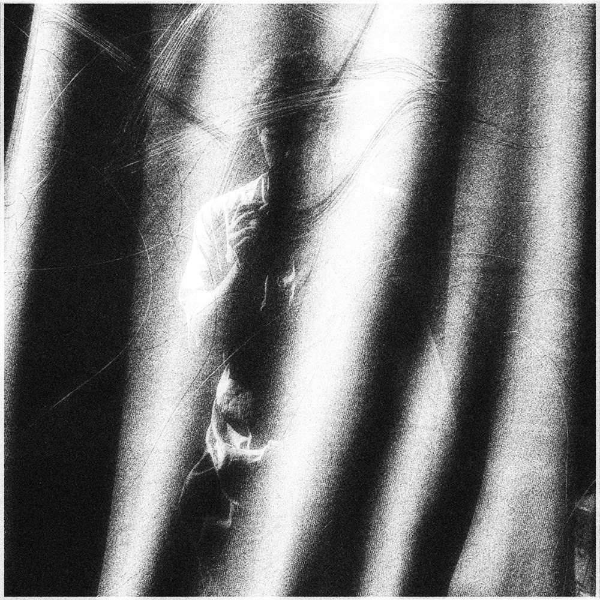
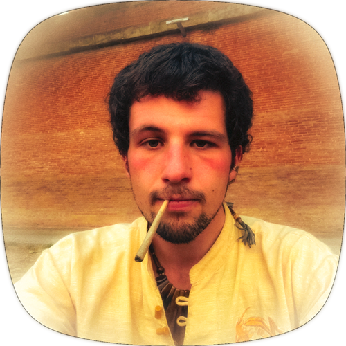
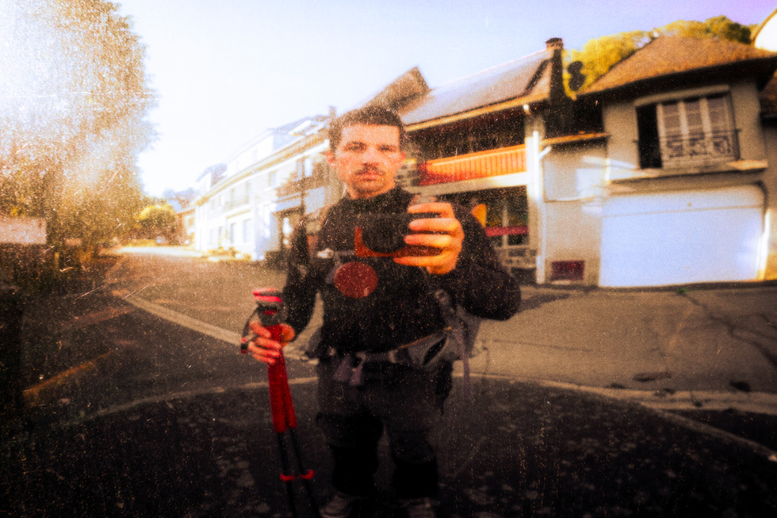
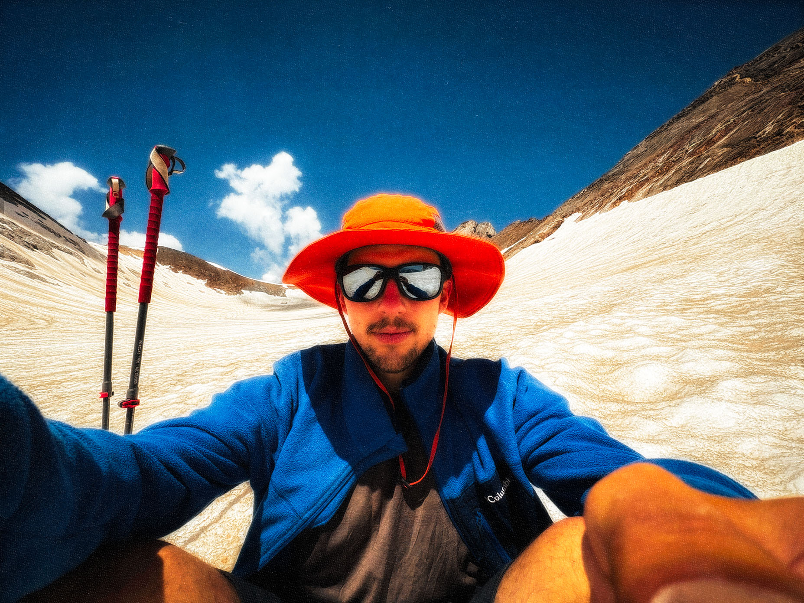
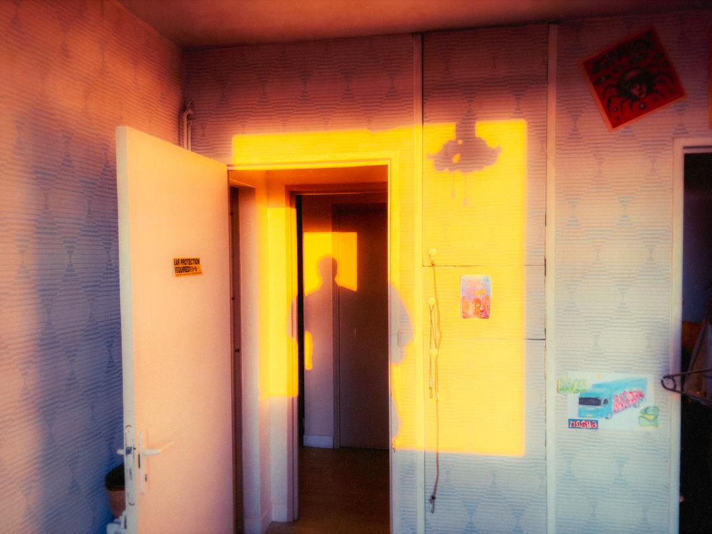
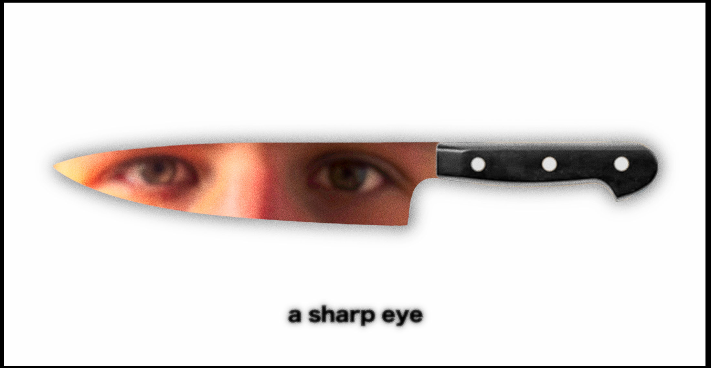
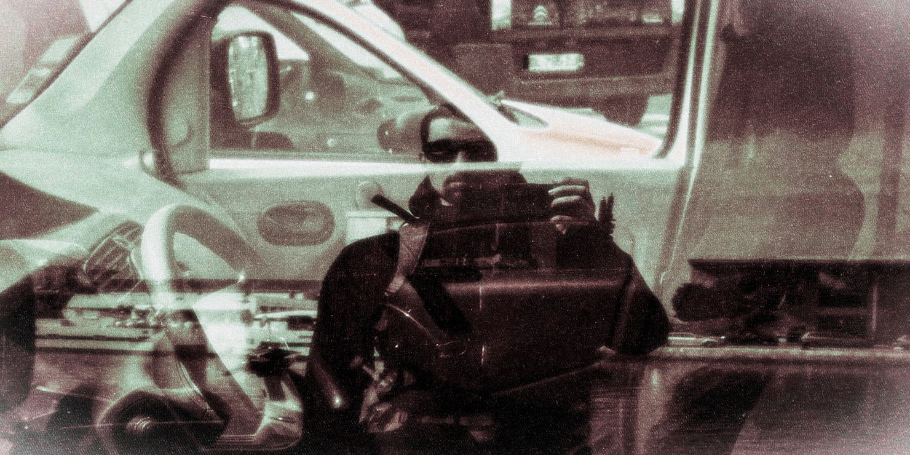
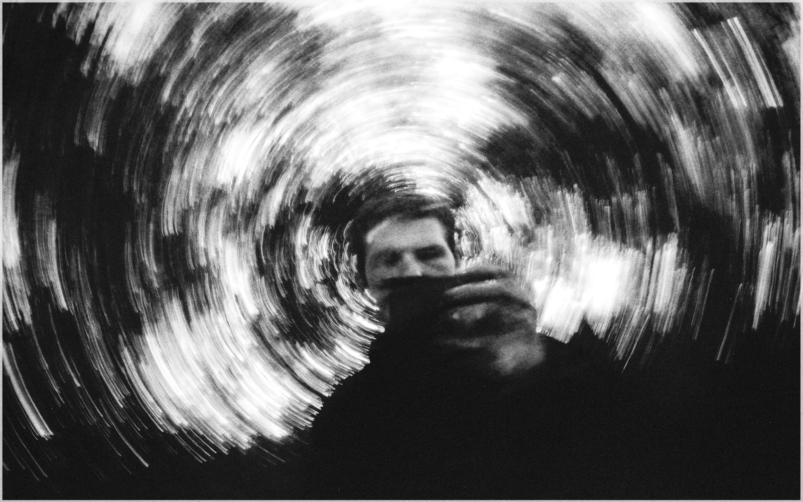
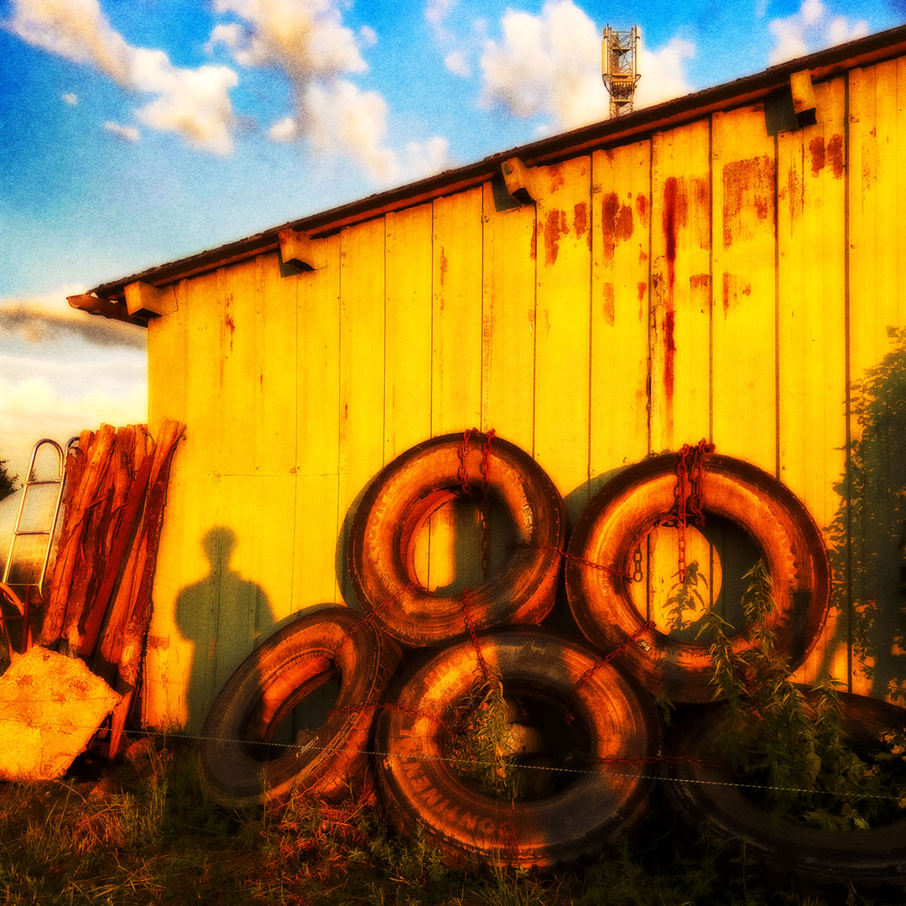
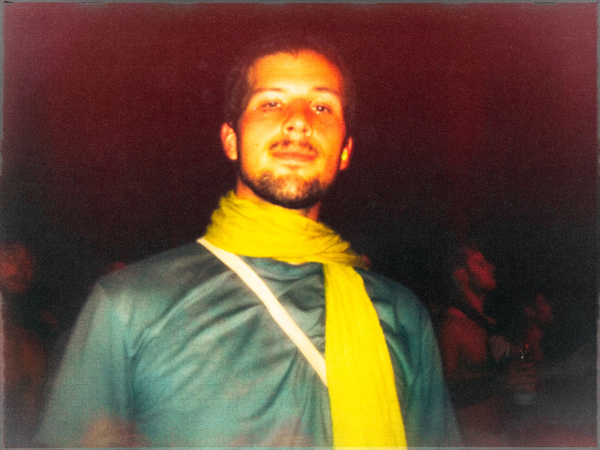

tom jauliac



hi, i'm tom,
or "kaaalm".
as far as the word "possible" allows,
i wish to discover many places,
where no one goes,
in what the world can offer me.
in the hope of bringing them out through frames i create,
essentially using digital mixed media techniques.
i am a world explorer,
a wanderer accross the countryside.
i did essentially a lot of treks alone,
and outdoor activities with my friends,
but since this year,
i'm trying to socialize in places where young people
are free to express their feelings and thoughts.
making a lot of photos and stuffs related to it.


i'm a mixed media artist focused on photographic mediums,
working with photos as if they were paintings.
not focused on just one subject, i took everything that catch my eye.
where every detail matter.



contact me
**and check my other works :
on my instagram page : @tomjauliac
or mail me at : kaaaaaalm@gmail.com
collab and art prints available on request.
(website by myself) ^^

